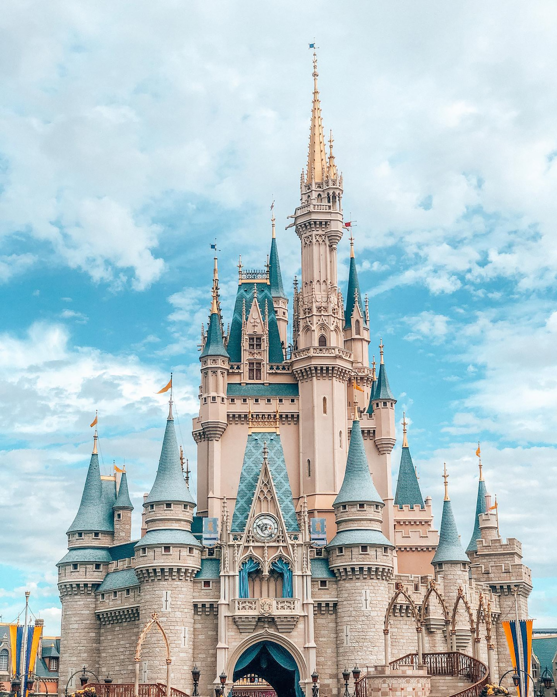

쿠킹덤은데브 시스터즈라는 제작사에서 만든 것으로 이전 게임인 쿠키런에 이은 후속작을 말한다.

새롭게 경험하는 쿠키들의 세계
마녀의 오븐을 탈출한 쿠키들이 드디어 새로운 쿠키들의 왕국을 건설합니다!
개성 있는 다양한 쿠키들과 함께 나만의 쿠키 왕국을 건설하고, 즐거운 순간을 함께 경험해보세요.
미지의 쿠키 세계를 탐험하고 적들과 전투를 벌이며 왕국의 영향력을 넓혀보세요.
왕국에 축제가 열리면 친구들이 찾아와요! 친구들과 함께 공동의 미션을 수행해보세요.
사랑스러운 쿠키들의 다양한 매력이 가득한 새로운 쿠키 세계가 여러분을 찾아갑니다.